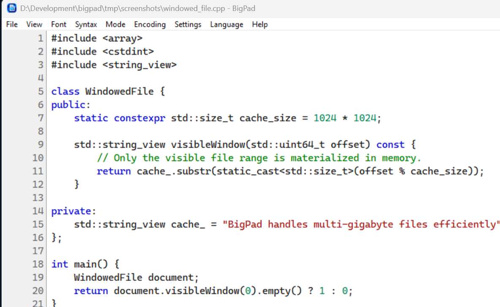
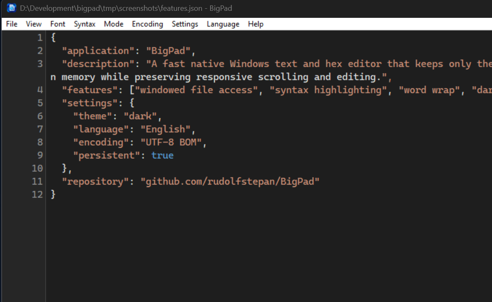
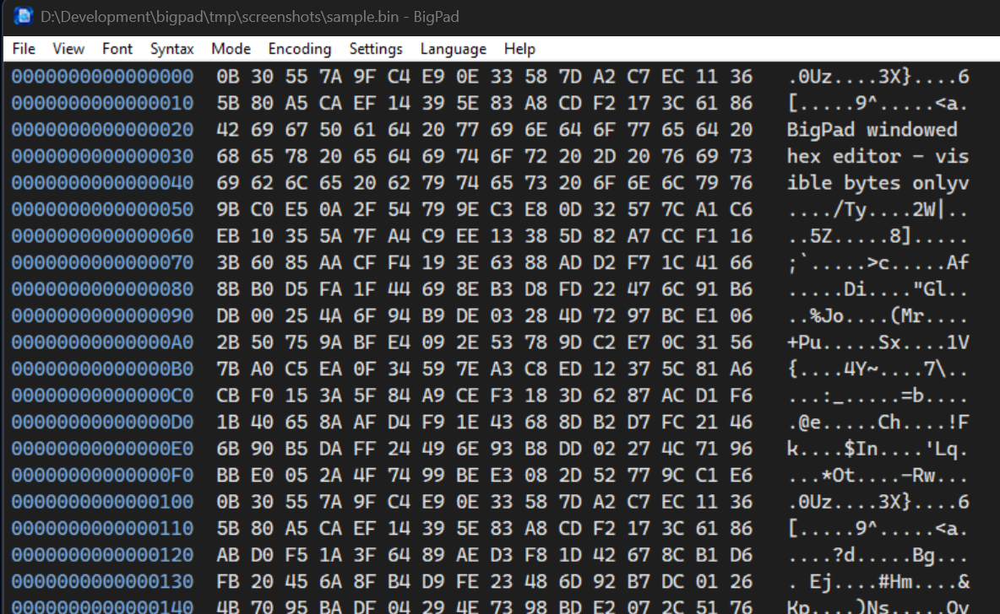

Mehrere Gigabyte
Öffne riesige Dateien über fensterweisen Zugriff, statt die komplette Datei in den RAM zu laden.
Nativer Editor für Windows
BigPad öffnet und bearbeitet mehrere Gigabyte große Text- und Binärdateien, ohne alles in den Arbeitsspeicher zu laden. Schnell, fokussiert und vollständig Open Source.
In Kürze auch im Microsoft Store erhältlich
 BigPad — windowed_file.cpp
BigPad — windowed_file.cpp
Kleiner Editor, ernsthafte Dateien
Eine Piece-Table referenziert unveränderte Dateibereiche. Im Speicher liegen nur kleine Lesefenster und neu eingefügte Bytes.
Öffne riesige Dateien über fensterweisen Zugriff, statt die komplette Datei in den RAM zu laden.
Wechsle in derselben Anwendung zwischen Texteditor und editierbarer Hexadezimalansicht.
Streamendes, atomares Speichern hält den Speicherbedarf vorhersehbar und schützt das Original.
Lesbare Farben für C/C++, C#, Assembler, JSON, Python, XML/HTML und Logdateien.
Wähle Hell- oder Dunkelmodus, Zeilenumbruch, Zeilennummern, Schrift und Schriftgröße.
Arbeite mit UTF-8, optionalem UTF-8-BOM und Windows-ANSI auf Deutsch oder Englisch.
Ein Werkzeug, zwei Perspektiven
Arbeite angenehm in langen Textsitzungen und prüfe bei Bedarf die exakten zugrunde liegenden Daten.


Ohne Umwege startklar
Hole die aktuelle Windows-Version von GitHub und starte die native Anwendung.
Nutze den Dateidialog oder ziehe eine Datei direkt aus dem Windows Explorer hinein.
Wähle Text- oder Hex-Modus, Encoding, Farbschema, Umbruch und Syntaxhervorhebung.
Von Grund auf lokal
BigPad ist eine klassische native Desktop-Anwendung. Sie benötigt kein Konto, sendet keine Telemetrie und speichert Einstellungen lokal.
BigPad
Lade BigPad für Windows herunter oder entdecke die Implementierung auf GitHub.